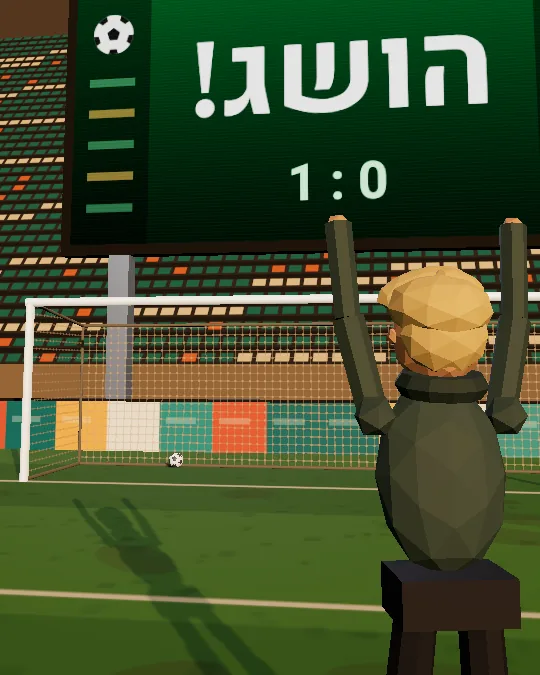

איך כותבים גול שקלוד באמת מסיים
במקום לכתוב ״תמשיך״ אחרי כל סבב, כותבים פעם אחת מה נחשב גמור. קלוד ממשיך לעבוד לבד, ומודל קטן ונפרד בודק אחרי כל סבב אם הגעתם.
ככה זה עובד
בקלוד קוד כותבים /goal ואחריו התנאי. הסבב הראשון מתחיל מיד, והתנאי עצמו הוא ההוראה.
בסוף כל סבב, מודל קטן ומהיר קורא את השיחה ומחליט: עוד לאהושגבלתי אפשרי
״עוד לא״ מגיע עם סיבה, וקלוד משתמש בה כדי לדעת מה חסר בסבב הבא. ״הושג״ או ״בלתי אפשרי״ מסיימים את הגול.
גול אחד פעיל בכל שיחה. גול חדש מחליף את הקודם.
מה יש בגול טוב
לא ככה, כן ככה
10 גולים מוכנים להעתקה
תחליפו נתיבים ופקודות לאלה של הפרויקט שלכם.
- טסטים
/goal כל הטסטים ב-test/auth עוברים (npm test מסתיים בלי שגיאות), ושום קובץ טסט אחר לא השתנה. או עצור אחרי 20 סבבים
- בילד נקי
/goal npm run build מסתיים בלי שגיאות TypeScript. או עצור אחרי 15 סבבים
- לינט
/goal npm run lint עובר בלי שגיאות, בלי להוסיף הערות eslint-disable. או עצור אחרי 10 סבבים
- מעבר לספרייה חדשה
/goal אין יותר שימוש ב-oldClient: הפקודה grep -rn "oldClient" src לא מוצאת כלום, והטסטים עוברים. או עצור אחרי 25 סבבים
- פיצול קובץ ענק
/goal הקובץ src/utils.js מפוצל לקבצים בתיקייה src/utils, כל קובץ שם קצר מ-200 שורות לפי wc -l, והטסטים עוברים. או עצור אחרי 20 סבבים
- רשימת באגים
/goal כל הפריטים ב-BUGS.md מסומנים [x], ולכל תיקון יש טסט שעובר. או עצור אחרי 30 סבבים
- כיסוי טסטים
/goal כיסוי הטסטים של src/payments הוא 80% ומעלה לפי npm run coverage, בלי למחוק טסטים קיימים. או עצור אחרי 20 סבבים
- תיעוד
/goal לכל endpoint בתיקייה routes יש סעיף ב-README.md עם דוגמה לבקשה ולתשובה. או עצור אחרי 15 סבבים
- דף נחיתה תקין
/goal הפקודה npx html-validate index.html עוברת בלי שגיאות, ולכל תמונה בדף יש alt. או עצור אחרי 10 סבבים
- יומן שינויים
/goal ב-CHANGELOG.md יש שורה לכל PR שמוזג השבוע. או עצור אחרי 10 סבבים
לבדוק, לעצור, להריץ לבד
/goalבלי תנאי: מציג את הגול, כמה זמן הוא רץ, כמה סבבים נבדקו, כמה טוקנים יצאו ומה הבודק אמר בפעם האחרונה.
/goal clearעוצר את הגול לפני שהוא נגמר. גם stop, off ו-cancel עובדים, וגם /clear מנקה אותו.
Ctrl+Oמראה את הסיבה מאחורי כל החלטה של הבודק.
claude -p "/goal …"מריץ את כל הלולאה בפקודה אחת, בלי ממשק.
גול לא משנה הרשאות. כדי שירוץ בלי לעצור ולבקש אישור על כל פעולה, מפעילים אותו ב-auto mode.